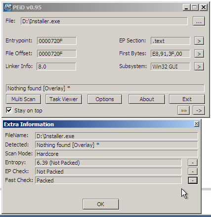

Blue Team, Red Team, Purple Team…
de quoi parle-t-on ?
Enchanté !
 CEFCYSien
depuis 2021
CEFCYSien
depuis 2021 Opérationnel depuis 2015
Opérationnel depuis 2015 Réponse aux
incidents chez
Réponse aux
incidents chez 
 SOC
chez
SOC
chez
 CEFCYSien
depuis 2021
CEFCYSien
depuis 2021 Opérationnel depuis 2015
Opérationnel depuis 2015 Réponse aux
incidents chez
Réponse aux
incidents chez  SOC
chez
SOC
chez
De quoi va-t-on parler ?
- La sécurité offensive
- La sécurité défensive
- Le SOC
- Le CSIRT
- Le RIC
- La fusion des services
NB : autant que possible cette présentation est en français ; ça peut surprendre.
De quoi va-t-on parler ?
L'organisation
Les métiers
les métiers présentés n'existent pas tous dans toutes les
structures,
ça dépend des moyens et missions de chacune
Des outils
Il y a beaucoup trop d'outils pour être exhaustif ici, des
exemples emblématiques ont été choisis
Les opérations en SSI
Tout tourne autour de l'incident
- Anticipation (audit, test d'intrusion, exercices, renseignement d'intérêt cyber)
- Détection (scénarios d'attaque, collecte de journaux, règles de corrélation)
- Réaction (traitement des incidents, analyse forensique, remédiation)
1. La sécurité offensive
Missions
- Évaluer le niveau de sécurité d'un SI
- Audit (de configurations/codes)
- Test d'Intrusion : périmètre défini
- Red Team : comportement identique à celui d'un attaquant
Red Team
- Ingénierie Sociale
- Pénétration physique
- Exploitation de vulnérabilités
La Cyber Kill Chain

Quelques outils
Metasploit

Kali Linux
https://tools.kali.org/tools-listing2. La sécurité défensive
Missions
- Protection des infrastructures
- Détection des incidents
- Réponse aux incidents
- Chasse
Le cadre du NIST
3. Le SOC
Security Operations CenterMissions
- collecte de journaux
- définition de scénarios offensifs
- création de règles de détection
- analyse des comportement
- réponse aux incidents
Le SIEM
Security Information and Event Management
Splunk Enterprise Security
Collecte de Journaux
Le SIRP
Security Incident Response PlatformLe SOAR
Security Orchestration Automation & Response4. Le CSIRT
Computer Security Incident Response Team
La collecte − Réseau

L'analyse − Réseau

Systèmes
Mémoire
Mobiles
La rétro ingénierie
La rétro ingénierie
Que fait ce code malveillant ?
Quelle est la configuration de ce maliciel ?
Quels indicateurs additionnels peuvent servir à l'investigation ?
Est-ce possible de casser la cryptographie utilisée ?
Outils
PEiD
radare2 + Cutter
5. Le Renseignement d'intérêt cyber
CTI : Cyber Threat IntelligenceMissions
- Suivre les modes opératoires adverses
- Classifier les capacités offensives
- Synthétiser l'état de la menace
Beaucoup de services en ligne de connaissance
la TIP
C'est une base des connaissances sur la menace
- Observables
- Modes Opératoires Adverses (MOA)
- Rapports
- Techniques, Tactiques et Procédures (TTP)
Exemple : OpenCTI
6. Comment tout ça s'assemble?
Le Cyber Fusion Center
Et du coup la purple team?
Et du coup la purple team?
Réduction des silos entre les équipes
Validation de cas d'usage
Entrainement de la Red Team
- Red : attaque
- Purple : coopération red+blue
- Blue : défense
- White : arbitres/pilotage
Merci
Crédits
- Icons made by Gregor Cresnar from www.flaticon.com